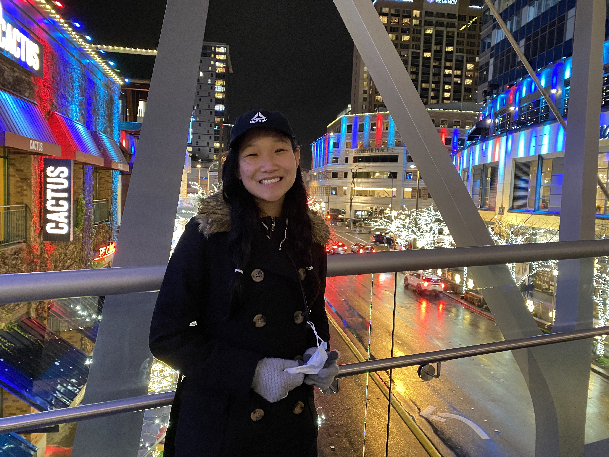

Peach Tree Rascals - "Ultra" (2018)
Experienced: Saturday October 8th, 2022 at CMU Wiegand Gym
About Me

Quick Questions:
Question 1: Who are you?
Hi my name is Sophie!
Question 2: When are you?
Great question! When am I gonna get a cat? Hmm... let me ask my parents
Question 3: What are you?
I am a student preparing to transition out of college, trying to figure out things as I go.
Question 4: Where are you?
Probably in Pittsburgh!
Question 5: How are you?
Mmmmm how are you? Are you taking care of yourself?
Question 6: Why are you?
Why am I making this website? Because I would like a form of self expression :D. I don't know who will read this, but this website so that I can be fully transparent without fear of judgement. My thoughts, my feelings, my hobbies, my hardships, and more... Ah yes, here I can make typos, I can be casual, for the audience is the void that is the Internet!
Quick quick journal
Friday November 11th, 2022: Vicetone is so good bro imma cry
Friday November 20th, 2022, 4:30 PM : My ability to think critically has been decreasing, and I can feel the effects as I try to complete my coursework whoops
Saturday November 26th, 2022, 3:51 PM : Thinking about how my friends and I used to call it bhocolate bhip bookies.
Friday December 2nd, 2022, 11:27 PM : I had an absolute blast at the SCS party. kfx z xnzmd gnzg xk ellm mk,,dc h j d. ldkl,d mjddl mj,,j b. h j d jg kgx lm bd zhxd.
Sunday December 11th, 2022, 11:27 PM : I am tired and hungry and irritable and unable to focus.
Thursday December 22th, 2022, 11:25 PM : I was feeling pretty proud of my grades until my friend made me feel like I shouldn't. I wish I could tell them but I feel like they don't uplift me.
Thursday December 22th, 2022, 11:25 PM :OK but lightning bug by dark cat kind of slaps and reminds me of my college friends that I'm starting to miss alr haha